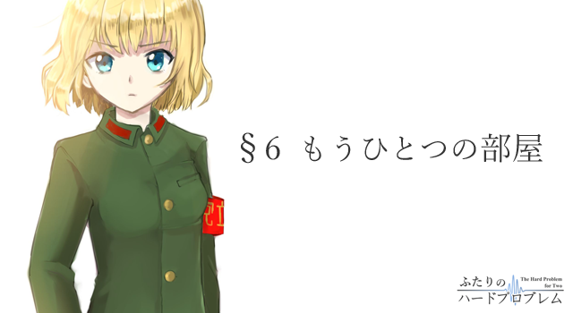

薄暗いセミナー室では熱を帯びたプロジェクタが煌々とした太い光の帯をスクリーンに投げかけていた。唸りを上げるファンの低い響きがさして広くもない空間に反射する。
「えー……、このピークは誘導分極によりサンプル中の配位子に歪みが発生したためだと考えられ……」
たどたどしく話を続ける声。希海はリングマウスを付けた右手をせわしなく動かしながら説明を続けていた。右手を振るたびにカーソルがくるくると円を描き、画面上の数式や図表を指し示す。見るからに拙い説明であるが、当の本人にはそんな細かいことにまで気を配る余裕などありやしなかった。
「であるからして、このデータを先ほどのモデルでフィットすると……」
あらかじめ考えておいた一連のセリフを必死に思い出しながら話を続ける。一年をかけてきちんと自分のものにした研究ならばともかく、この発表は博士課程の先輩がやったものを都合よく拝借しただけだ。実験の手伝いをしただけの希海が、自らの言葉で適切な説明などできようはずがない。ボロを出さぬよう、言葉が途切れてしまわぬよう、そして何より変な質問を誘発してしまわぬよう、慎重に言葉をぼかしながら説明を続けた。
そんな希海とプロジェクタを繋ぐ直線の向こう、ちょうど部屋の反対側にあたる場所。壁を背負うように設置された長机の前には、椅子に座って腕を組んだ教授の姿があった。眉間に皺を寄せたまま、微動だにせずただじっと希海の言葉に耳を傾けてる壮年の男。スクリーンの反射を受けて青白く照らされてたその顔はまるで死体のように薄気味が悪い。希海がページを切り替えるごとに、眼鏡に映り込んだ光がチカチカとせわしなく点滅していた。
「……以上で発表を終わります」
希海の言葉と同時に、教授は手元に置いてあったストップウォッチを止めた。ピッという電子音がファンの唸りに飲まれて消える。
「九分。少し短いですね。緊張すると喋るのが速くなるから明日は意識してゆっくり喋ってください。それと発表内容の方ですが……」
希海は少しだけ息を飲んで続く言葉を待った。頼む、いい加減オーケーにしてくれと念じる。こうやって心の中で手を合わせるのも何度目だろうか。この一週間というもの、発表しては修正の繰り返しだった。言われたとおりに作っても違うとやり直しを命じられたり、気合を入れてレイアウトしたページに限って『いらない』と削除を言い渡されたり。睡眠だってろくに取れてないし家にだって帰れていない。本番は明日の朝一番なのだから、ここいらで了承をもらってさっさと帰りたかった。
教授はそんな希海をよそにゆっくり腕を組みだすと、何かを思案するように指先をトントンと動かし、
「まあ……、こんなところでしょう。明日もこれで行きましょうか」
そう静かに告げるのだった。
ようやくか……。控えめな返礼を述べると、こわばらせていた緊張が徐々にほどけていく。さっきまで必死に祈っていた割には大した有り難みを感じなかった。数ヶ月もの間、この時を待ち望んでいたはずなのだが、実際にその瞬間が訪れてみても手の内に残ったのは疲労感だけである。
とは言え、これで大手を振って家に帰れるのだ。誰に咎められることもなく温かい布団でぐっすりと寝られる。そう思うと沈んでいた気持ちも少しばかり高揚してくる気がした。そうだ、さっさと帰ろう。希海は爪の伸びきった手でラップトップのキーボードを叩き、実行させていたプレゼンテーションソフトを手早く終了させる。後はこのスライドを共有フォルダにコピーすれば明日の準備は完了だ。
「ところで青山さん」
その様子を黙って眺めていた教授が不意に口を開いた。
これ以上話すことなんてない。頭のどこかでそう思っていた希海はぎくりとして、外部メモリを引っこ抜いたままの姿勢で固まってしまう。しまった。流石にそそくさとしすぎたか。あまりに淡々とした自分の様子が教授の機嫌を損ねてしまったのかもしれない。反省の色なしと見られて新たな課題を突きつけられたら一体どうしよう。流石にこれ以上はもう勘弁してくれと希海は思う。だが当の本人の心配をよそに教授は少しだけ柔和な表情を浮かべると、
「この一ヶ月半、毎日よく頑張りましたね。卒業の件はきちんと計らっておきます」
そう言ってよこすのだった。いつもの気難しい顔つきとは少し違う穏やかな表情。だが一方の希海はそんな教授をどうしても直視することができず、何かから目をそらすように視線を下へと落としてしまう。
「あ、えっと……。ありがとうございます」
そのまま絞るような声でそっけない謝意を述べ、逃げるように部屋を出た。一転して明るい廊下の照明に少しだけ目がくらむ。
（頑張りましたね……、か）
廊下を歩き、学生部屋へと向かいながら教授の言葉を反芻してみる。
もう少しちゃんとした礼を言うべきだっただろうか。セミナー室から離れるにつれて、後悔が少しずつ大きくなる。
せっかく恩情で単位をくれるというのだ。本来ならば深々と頭でも下げるべき場面だったのだろう。だが希海には何故かそれができなかった。こっぴどく叱られたいつぞやの恨みか、それともたかが一ヶ月と半分そこらの研究で卒業させてもらえることに対する後ろめたさか。確かにどちらももっともらしい理由だし、実際にそういう感情がなかったと言うと嘘になる。
けれど所詮それらはすべて枝葉だ。希海の内にかかった霞……釈然としなさの本当の原因は、単なる『実感のなさ』である。大学へ連れ戻されたこと。数ヶ月に渡って日付が変わるまで実験をやったこと。徹夜をして論文を書き上げたこと。こうして幾度となく発表練習をしたこと。すべて周りに言われるがままにしていただけだ。自分が主体となって何かをしたつもりなんて希海にはこれっぽっちもないのだから、それを褒められたところで『他の人の方が偉いだろう』という感想をひねり出すくらいが関の山である。
「青山さん！」
背後から呼び止める声。とぼとぼと廊下を歩いていた希海が振り返った先にはここ数日よく話をする人物の姿があった。落ち着いて大人びた、いかにも『お姉さん系』の格好をした人。竹見さんである。ちょうど自宅へ帰ろうとしていたのか、桜色のショルダーバッグを下げた彼女は希海の姿を確認すると、小さく手を降ってこちらに駆け寄ってきた。
「どうだった？」
「一応オーケーもらった」
希海は淡々と答えつつも、少しだけ表情を緩める。彼女とはまだ友人と呼べるほどの深い付き合いはないが、去年の年末ごろに比べると随分気楽に話せるようになってきた。
「良かった。これでちゃんと卒業できる……のかな？」
「うん。なんとかできそうな感じ。ま、なんとなくこうなることは予想してたけどね」
そう。予期せぬ言葉に戸惑ってしまったものの、卒業をさせてもらえること自体は予想済みだった。考えてみれば当然のことである。つい一ヶ月半ほど前、希海は単位をもらって卒業するか、もらえずに退学になるかの瀬戸際に居たのだ。卒業をさせてもらえないということは、中途退学を余儀なくされることと同義である。はたして、そんな人間を意味もなく研究活動に従事させるのだろうか。そんなものは当の希海からしてみても迷惑な話だし、教授や他の人間にとっても指導する人数が一人増える分、間違いなく仕事は増えるだろう。さすがにそんな筋が通らない上に手間もかかる制裁を、研究室の責任者ともあろう者がするとは思えなかった。厳しい指導で心を入れ替えさせ、最後に温情で単位を与えてめでたしめでたし……そんな寸法であろう。希海の目にはそういうシナリオが透けて見えていたし、だからこそ文句の一つも言わず黙々とそれに身を委ねたのだ。
身支度をし、竹見さんと世間話をしながら大学を出た。
「え、じゃあ竹見さんこのまま大学に残るの？」
「うん。やっぱり研究楽しいしね」
竹見さんとは入学年度が同じだ。しばらく大学へ来ていなかった間に一つ上の先輩になってしまっていたが、だからといって急に敬語で話すのはどこかぎこちない。だから希海は知り合ったときのままの口調で竹見さんに接するし、彼女もそれを咎めなかった。
「すごいなあ。博士になったら何本も論文書かないといけないんでしょ。私には絶対無理」
「もう、そんな脅さないでよ。多分、慣れだよ慣れ」
静まり返った大学のメインストリートに、二人の話し声が反響した。相変わらず殺風景なキャンパス。明らかに車での来学を意識した広い通りと、規則的に並ぶ街灯の白い光。右手にはラジオアイソトープの不法投棄で昨年ニュースを賑わせていた核物理研究センターが闇夜を黒く切り抜き、左手には何に使われているかよく分からない工学部ののっぽビルが航空障害灯の赤い光を頂上にじっとに抱いていた。だが立て看板や壁新聞、ベンチに座って世間話に花を咲かせる人達なんてどこにも居やしない。この空間には多くの大学にあるはずの混沌とした気配が存在しないのである。幅の広い道路と潤沢な緑地、そして整然と並ぶ飾り気のない箱型の建物。まるで企業か何かの研究施設だ。昼間にここを歩けばさぞ小奇麗な風景が見れただろう。だが生憎と今は夜である。タイヤがアスファルトを踏みしめる音はその鳴りを潜め、緑地の木々はそのシルエットをうっすらと闇夜に浮かばせるだけだ。こうして二人だけで広い通りを歩くと、まるで人の居ない廃墟に来てしまったような錯覚に陥ってしまう。
自然科学部棟から真揺門までは徒歩で十分弱。普段ならじれったく感じる道のりだったが、この時ばかりは不思議と短く思えた。
「じゃあまた。明日の発表、頑張ってね」
そう言葉を交わし、ゲートの前で竹見さんと別れた。彼女の下宿先はここから少しばかり北に行ったところにある熱砂地区だ。その小さな背中を少しばかり見送ると、希海は踵を返して反対方向へと歩き出す。大学前の通りは『かもめ池』から通じる水路に沿って、ゆるやかに蛇行していた。希海は左右から車が来ないことを確認すると、片道一車線の道路を横断して歩行者用の橋を渡った。ここから向こうは真揺ニュータウンだ。
目隠しと防音のために植えられた背の高い木々の列を横切り、希海は住宅街へと足を踏み入れる。連日の作業で疲労困憊の身からすると一刻も早く帰りたいところだったが、こうして歩みを進める内にそんな考えはどこかへと霧散してしまっていた。
この道は、高校の頃に使っていた通学路だ。
大学生になって家が少し遠くになってしまってからというもののすっかりご無沙汰だった道。もっとも当時は徒歩ではなく自転車だったし、ルートだって少しばかり違う。だが慣れ親しんだこの景色をゆっくりと歩けるのも、あと数回ほどしか無いのかもしれない。胸の奥の感傷がもぞもぞと動き出すのを感じた。
あと数回。そう、あと数回なのだ。
明日の卒研発表会と、いくつかの事務的なことを終えるともうこの大学に顔を見せることはなくなってしまう。足掛け五年。いや、希海の場合は隣の党立高校からの進学だったから、そちらも入れると八年である。そんな長きに渡って続いていたものが、今、終わろうとしているのだ。
――八年。
気付けば遠くまで来たものだ。色々なことがあったはずだが、いざ振り返ってみると、一瞬の出来事のように思える。この八年間を、自分は上手く乗り切れたのだろうか。自分は……あの頃より強くなれたのだろうか？
ポケットからタバコを取り出し火を点けた。そのまま深呼吸をするように吐き出すと、塊となった煙がゆっくりと立ち上がった。街灯の白光がほのかに烟る。
自分は上手く乗り切れたか。その答えはイエスでありノーでもある。高校の頃はそこそこに良い思い出が多いとは言え、色々な心残りもある。大学に至っては一年以上を棒に振ってしまったというのに、何か得たものがあったかと言われれば首をひねるしかない有り様だ。決して上手くはいっていない。上手くはいっていないが……乗り切った。そう思う。
道中は立ち止まってばかりで躓くことなんて数え切れないほどあった。最後の数ヶ月なんてもうぼろぼろだ。けれど何とか卒業はできる。ゴールはもうすぐそこだ。そう考えると、この八年間も決して悪くなんてなかったのではないだろうか。手にしたものは何もないし楽しいことばかりじゃなかったけれど、自分は満足している。人生なんて得てしてそんなものだし、きっとこれからもそうやって生きていくのだろう。まだ見ないこの先の道は延々と続いていて、躓いたり立ち止まったりしながら、それでも何とか歩いていくんだろう。
希海はそんなことを考えながら黙々と帰路を進んだ。大学から鮮新台の我が家まではざっと三十分。初めこそ意気揚々と歩いていた希海だったが、降り積もった疲労や日頃の運動不足から次第に足が重くなっていく。とぼとぼとした足取りで七号公園を抜け、弥生時代か何かの人間が作ったような階段を半分登った時点で既にくたくたになっていた。帰ったらすぐに寝よう。そう決心して階段を登り切った希海の目に意外なものが飛び込んでくる。
一台の車がアパートの前に停まっていた。
どこかで見覚えのあるシルバーの軽自動車。その脇に立って今まさにドアを開けようとしていた車の持ち主は希海の姿に気付くと、『いいタイミングだ』と言わんばかりに小さく目を見開き、こちらへと向かってくる。
「元気にしていたかね」
その声を冷水のように浴びせられ、希海は歩くのも忘れてその場に立ちすくんでしまう。
声の主は東だった。
この男と顔を合わせるのはあの時以来。たった一ヶ月ぶりだというのに、以前も同じくらいの頻度でしか会っていなかったというのに、今の希海にはまるで名前しか知らない親戚に会ったかのような違和感を覚えてしまう。
街灯がちらちらと瞬いた。この半導体全盛期の時代にあってなおしぶとく生き残っている古びた水銀灯。その青白い光にぼんやりと照らされた東の顔によく知った飄々とした色はない。彼はあたりをぐるりと見渡すと、そのまま希海の方へ視線をよこさずに告げた。
「少し前に部屋のインターホンを鳴らしたのだけどね。不在だと思って諦めかけていたが、粘ってみて正解だったよ」
東は胸ポケットからタバコを取り出すと、買ったばかりのソフトケースをトントンと叩いてフィルターをくわえ、百円ライターでゆっくりと火を点けた。希海は全身に微かな緊張を感じながら、そんな男の様子をただひたすらに眺めている。
東も希海も、しばらく何も言わなかった。沈黙が二人の間に横たわった空気を重くしていく。希海には彼がここへ来た理由がなんとなく分かっていたし、東にもそんな希海の内心がおぼろげながらに伝わっていたのだろう。だからこそこうして互いが互いを牽制し合うように、会話のきっかけを探り合っているのだ。
しんとした冷たい空気が場を支配し、一切の言葉が交わされないままタバコが燃え尽きた。やれやれと小さくこぼした東は吸い殻をポケットにねじ込み、自嘲気味に口の端を少し吊り上げてみせると覚悟を決めたかのように本題を口にする。
「今日ここに来たのは他でもない。リコのことだ」
その名を聞いた瞬間、少しだけ胸が圧迫されたような気がした。
入り口のない六畳の部屋と、その窓辺に立ちすくむ少女。すべての熱を奪い去る嵐と、最後に聞いた言葉。一ヶ月前に見た光景が矢継ぎ早に脳裏をかすめたが、結局それらが言動となって外部へ出ることはなかった。希海はまるで関心がないかのように、眉ひとつ動かさずに続く話をただじっと待つ。
「実はな……」
東は申し訳なさそうに少しだけ視線を落とすと、そっと目を伏せて言葉を選ぶようにゆっくりとその事実を伝えはじめた。
「会議でリコの廃棄が決まった。ちょうど四日前のことだ」
街灯が再び瞬き、あたりが一瞬闇に包まれる。東が靴底でアスファルトをこする音が暗闇に響き、息を吹き返した電灯の瞬きがアパートの白壁を弱々しく照らした。
「あれから何人かにルーミングをやってもらったんだが、どれも駄目だったよ。依頼した人間は一種持ちばかりだったというのに、みな相手にならず逃げて帰ってきたらしい。普通の病気であれば粘り強く治療を続けるところなんだが、青山君も知っての通り時間が経つほどに閉律症の治療は困難を増すから今後の回復は見込めないだろう。だからな、もう眠らせてやろうと……そう決まったんだ」
そこまで一気に言い切ると、東は次いでリコの機能停止に関わる細かな説明を始めた。専用のソフトウェアを使ってバッテリー電圧を徐々に落としていくから苦しみはない。リコのＦＩＡＮＣに残っている個人情報は機能停止後にすべて消去される。残ったボディに関してはこちらで再利用することになるため引き渡しや火葬はできないが、形式的な葬儀は可能だし望むのなら髪の毛などパーツの一部を無償で譲り受けることだってできる。
東は終始苦々しい様子だった。多分、この説明はオーナーに対して必ず行わなければならないものなのだろう。書面上の所有権は東にあるとはいえ、事実上のオーナーは希海だ。そして同じような状況に陥ってしまった他のオーナーと同様、希海もそんな東の説明をどこか遠い国の話のように現実感がないままに聞いていた。
――リコとは、もう二度と会えない。
そう頭の中で繰り返してみたものの、希海には近所の文具屋が閉店してしまった程度の喪失感しか持てなかった。自分がここまで冷淡な人間だったのかと倒錯した感慨さえ抱いてしまう。
「……青山君には、リコの最期を看取る気はあるかい？」
「え、えっと」
「言葉の通りだよ。リコの電源を落として眠らせてあげる話はさっきしたね。青山君にその場に同席する気はあるかい？ 予定は明日の朝九時だ」
「すいません。明日は……」
「予定が入ってるのかい？ すまない。青山君からすると突然の話だったかも知れないが、ここ数日何度電話を掛けてもいっこうに繋がらなかったんだ。だがそういうことなら、こちらも日程を変更することはできる。一年に満たない付き合いだとは言え同じ家に暮らして苦楽を共にした仲だし、ちゃんと別れを告げておくべきだ。色々な思い出に……ね」
「リコとの……思い出……」
自ら口に出したその単語が凪いだ水面に一石を投じた。投げ入れられた小石は小さな波紋を作り、希海の内側に眠らせていた記憶たちを次々と引きずり起こす。まずはじめに浮かんだ光景は、怖いくらいに大きな青空とそこに浮かぶ小さな積乱雲。白いビーチに立った可愛らしい花柄の水着の少女。遊びに行った先で竹見さんに出会ってしまい、結局何もせずに帰ってしまった。秋には自転車の練習もした。結局リコが自転車に乗れるようになったのは、もう十一月も終わろうかという頃だった。冬。クリスマス・イブの日にとんでもないプレゼントをもらってしまい恥ずかしがりながら街を歩いた。突然掛かってきた大学からの電話。一転して終わりを告げた緩やかな日々。大学でが忙しくなって余裕がなくなっていたときにリコの記憶が戻ってしまって、そして――
「私は……遠慮しておきます」
言葉がこぼれ落ちる。
嘘も偽りも強がりもない正直な気持ち。それは恥も外聞も捨て去り、見たくないものから目を背けようとする裸の言葉だった。
「しかし――」
「もういいんです。私、疲れちゃいました。自分の無力さや自分の馬鹿さ加減に。リコと一緒にいると、そんな自分を少しだけ忘れることができたんですけど……、でもやっぱり所詮は忘れていただけ。単なる勘違いだったんです。分不相応な勘違いをしてたから、結局あの子を傷付けることになってしまった。リコをあんな風にしてしまったのは私。そんな私が、あの子の最後を看取るだなんておこがましいです。たとえあの子がそれを許してくれても、私が耐えられない。だからもう……いいんです。今はただ忘れたいんです。見たくないんです。あの子のことも、馬鹿で無力な私のことも」
心に投じられた一石が呼び覚ましたものは、後悔と諦念だった。リコとの思い出が輝かしいものであればあるほどに、それを壊してしまった自分の愚かさが大岩のようにのしかかってくる。そして希海にはそんな重荷に耐えられるだけの強さがなかった。そう、結局自分は強くなれなかったのだ。そしてそんな自分には、ただひたすらに事実から目を逸らすことしか逃げ道がない。逃げなければ頭が変になってしまう。そんな気がした。
「すいません。だから、もう私にはかまわないでください。リコのことは東さんにおまかせします」
最後まで言い切ると、希海は星空を仰いで拳を握りしめた。こうやって自分が最低な人間であることを口に出すと、少しだけ楽になった気がした。目頭の熱さはもはやどこかへ行ってしまったし、内蔵をかき回されるような吐き気も消えた。今、希海の中には墨汁のようにどす黒い不快感が漂っているだけ。
「分かった」
東はそんな希海を咎めることもなく、ただ一言だけつぶやくと同じように上を向く。星ひとつ見えない夜空には街の光に照らされたオレンジの雲。二人はそのまま何も言わずにただじっと雲が流れるのを目で追っていた。
やがて夜風の冷たさに負けたのか、東はゆっくりと歩き出すと車のドアに手を伸ばす。
「リコの機能停止は明日の朝九時からだ。私は車でいくつか書類の作成をしてからここを発つから、気が変わったらいつでも降りてくるといい。もし気が変わったら……だがね」
そう言って最後に「今までありがとう」と付け加え、東は車に乗り込んだ。希海は小さく会釈をすると、回れ右をしてそそくさとアパートの階段を登っていく。気持ちは晴れない。手すりのひとつでも蹴飛ばしてやりたい気分だったが、そんなことをしたところで楽になれるとも思えなかった。
（私は……）
ここへ帰ってくるまでの道中、自らに問いかけた言葉がよみがえる。自分は、強くなれたのだろうか？
（結局、私は……）
考えるまでもない。確かに大学は卒業できたかもしれない。この八年間を上手く乗り切れたかもしれない。けれど自分は……何一つ変われなかった。自分は今もあの廃工場で膝を抱えていた頃と同じだ。狭いアパートの一室で劣等感と矮小感に苛まれていた頃と同じだ。自身の内に湧き上がる感情を上手く制御できず、大切な人を傷付けてしまったのだ。
（……もういい）
もう何も見たくないし聞きたくもない。考えたくもない。
ただそれだけだった。